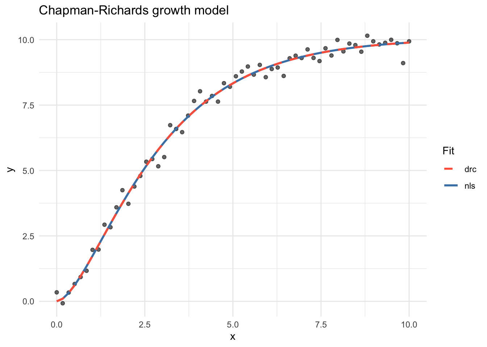
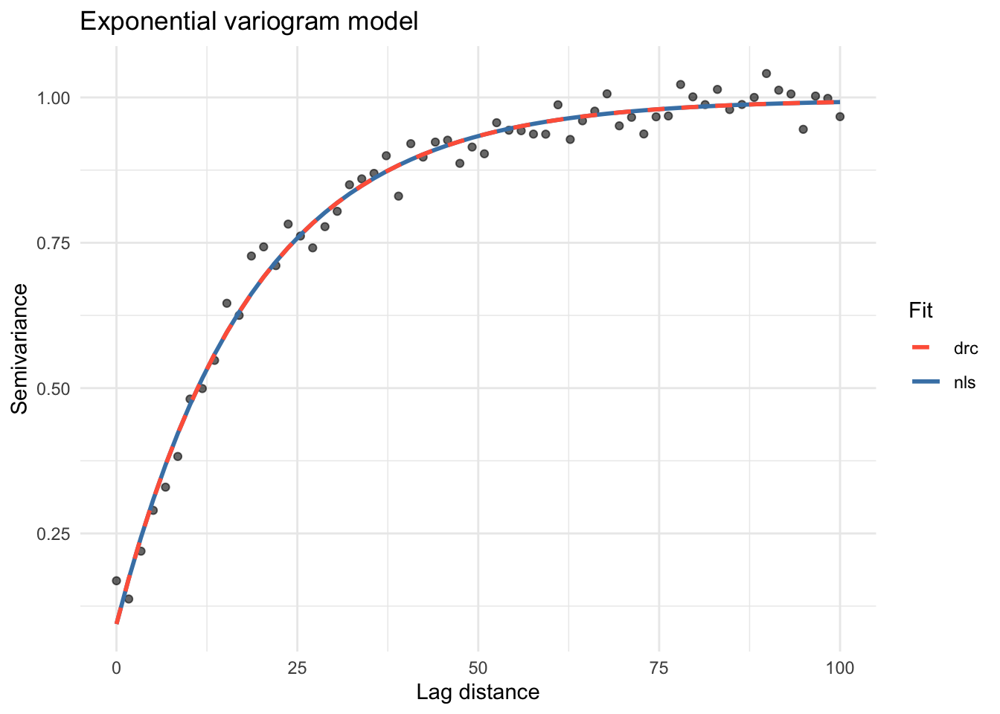
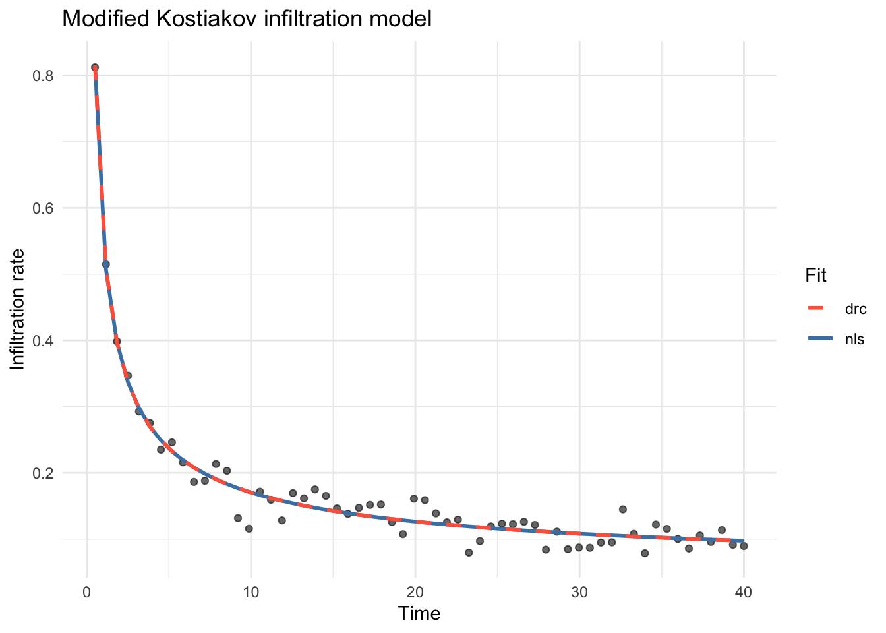

library(GMisc)
library(drc)
#> Loading required package: MASS
#>
#> 'drc' has been loaded.
#> Please cite R and 'drc' if used for a publication,
#> for references type 'citation()' and 'citation('drc')'.
#>
#> Attaching package: 'drc'
#> The following objects are masked from 'package:stats':
#>
#> gaussian, getInitial
library(ggplot2)Non-linear and self-starting functions
2026-05-19
Source:vignettes/non_linear_self_starters_vig.qmd
Introduction
The GMisc package provides a collection of non-linear model functions together with self-starting routines for both nls() (base R) and drc::drm(). Self- starters automatically derive sensible initial parameter values from the data, removing the need to supply starting values manually and reducing the risk of convergence failures.
Each model is available in three forms:
-
*.fun()— the bare mathematical function. -
SS*()— aselfStartobject for use withnls(). -
DRC*()— adrcMeanobject for use withdrc::drm().
Available models
| Model | Equation | Parameters |
nls self-starter |
drc self-starter |
|---|---|---|---|---|
| Chapman-Richards | , , | SSchaprich() |
DRCchaprich() |
|
| Exp. with inverse predictor (Type 3) | , | SSexp3() |
DRCexp3() |
|
| Negative exponential | , , | SSexpneg() |
DRCexpneg() |
|
| Two-asymptote exponential | , , | SSexpneg2() |
DRCexpneg2() |
|
| Exponential variogram | nug, psill, range | SSvarexp() |
DRCvarexp() |
|
| Gaussian variogram | nug, psill, range | SSvargauss() |
DRCvargauss() |
|
| Spherical variogram | nug, psill, range | SSvarsph() |
DRCvarsph() |
|
| Inverse polynomial (1st order) | , | SSinvpoly1() |
DRCinvpoly1() |
|
| Inverse polynomial (2nd order) | , , | SSinvpoly2() |
DRCinvpoly2() |
|
| Inverse polynomial (3rd order) | , , , | SSinvpoly3() |
DRCinvpoly3() |
|
| Modified Kostiakov | , , | SSkostmod() |
DRCkostmod() |
Examples
1. Chapman-Richards growth model
The Chapman-Richards model describes sigmoidal growth towards an upper asymptote :
set.seed(42)
x <- seq(0, 10, length.out = 60)
y <- chaprich.fun(x, a = 10, b = 0.5, c = 2) + rnorm(60, sd = 0.25)
df <- data.frame(x = x, y = y)Fit with nls()
mod_nls <- nls(y ~ SSchaprich(x, a, b, c), data = df)
summary(mod_nls)
#>
#> Formula: y ~ SSchaprich(x, a, b, c)
#>
#> Parameters:
#> Estimate Std. Error t value Pr(>|t|)
#> a 10.06996 0.10643 94.62 <2e-16 ***
#> b 0.45860 0.02496 18.38 <2e-16 ***
#> c 1.77995 0.11407 15.60 <2e-16 ***
#> ---
#> Signif. codes: 0 '***' 0.001 '**' 0.01 '*' 0.05 '.' 0.1 ' ' 1
#>
#> Residual standard error: 0.2832 on 57 degrees of freedom
#>
#> Number of iterations to convergence: 5
#> Achieved convergence tolerance: 2.883e-07Fit with drc::drm()
mod_drc <- drm(y ~ x, data = df, fct = DRCchaprich())
summary(mod_drc)
#>
#> Model fitted: Chapman-Richards growth model
#>
#> Parameter estimates:
#>
#> Estimate Std. Error t-value p-value
#> a:(Intercept) 10.069934 0.105530 95.422 < 2.2e-16 ***
#> b:(Intercept) 0.458611 0.024683 18.580 < 2.2e-16 ***
#> c:(Intercept) 1.779977 0.113123 15.735 < 2.2e-16 ***
#> ---
#> Signif. codes: 0 '***' 0.001 '**' 0.01 '*' 0.05 '.' 0.1 ' ' 1
#>
#> Residual standard error:
#>
#> 0.2832407 (57 degrees of freedom)Plot
df$fit_nls <- predict(mod_nls)
df$fit_drc <- predict(mod_drc)
ggplot(df, aes(x, y)) +
geom_point(alpha = 0.6) +
geom_line(aes(y = fit_nls, colour = "nls"), linewidth = 1) +
geom_line(
aes(y = fit_drc, colour = "drc"),
linewidth = 1,
linetype = "dashed"
) +
scale_colour_manual(values = c(nls = "steelblue", drc = "tomato")) +
labs(
title = "Chapman-Richards growth model",
x = "x",
y = "y",
colour = "Fit"
) +
theme_minimal()
2. Exponential variogram model
The exponential variogram is widely used in geostatistics to model spatial autocorrelation. It approaches the sill asymptotically:
set.seed(7)
x <- seq(0, 100, length.out = 60)
y <- varexp.fun(x, nug = 0.1, psill = 0.9, range = 20) + rnorm(60, sd = 0.03)
df2 <- data.frame(x = x, y = y)Fit with nls()
mod_nls2 <- nls(y ~ SSvarexp(x, nug, psill, range), data = df2)
summary(mod_nls2)
#>
#> Formula: y ~ SSvarexp(x, nug, psill, range)
#>
#> Parameters:
#> Estimate Std. Error t value Pr(>|t|)
#> nug 0.09419 0.01697 5.551 7.71e-07 ***
#> psill 0.90220 0.01624 55.569 < 2e-16 ***
#> range 18.76848 0.72081 26.038 < 2e-16 ***
#> ---
#> Signif. codes: 0 '***' 0.001 '**' 0.01 '*' 0.05 '.' 0.1 ' ' 1
#>
#> Residual standard error: 0.02931 on 57 degrees of freedom
#>
#> Number of iterations to convergence: 4
#> Achieved convergence tolerance: 1.691e-07Fit with drc::drm()
mod_drc2 <- drm(y ~ x, data = df2, fct = DRCvarexp())
summary(mod_drc2)
#>
#> Model fitted: Exponential variogram model
#>
#> Parameter estimates:
#>
#> Estimate Std. Error t-value p-value
#> nug:(Intercept) 0.094185 0.016996 5.5417 7.992e-07 ***
#> psill:(Intercept) 0.902198 0.016245 55.5360 < 2.2e-16 ***
#> range:(Intercept) 18.768462 0.723650 25.9358 < 2.2e-16 ***
#> ---
#> Signif. codes: 0 '***' 0.001 '**' 0.01 '*' 0.05 '.' 0.1 ' ' 1
#>
#> Residual standard error:
#>
#> 0.02931391 (57 degrees of freedom)Plot
df2$fit_nls <- predict(mod_nls2)
df2$fit_drc <- predict(mod_drc2)
ggplot(df2, aes(x, y)) +
geom_point(alpha = 0.6) +
geom_line(aes(y = fit_nls, colour = "nls"), linewidth = 1) +
geom_line(
aes(y = fit_drc, colour = "drc"),
linewidth = 1,
linetype = "dashed"
) +
scale_colour_manual(values = c(nls = "steelblue", drc = "tomato")) +
labs(
title = "Exponential variogram model",
x = "Lag distance",
y = "Semivariance",
colour = "Fit"
) +
theme_minimal()
3. Modified Kostiakov infiltration model
The Modified Kostiakov model describes infiltration rate as a power-law decay with an additive constant representing the steady-state rate :
set.seed(99)
x <- seq(0.5, 40, length.out = 60)
y <- kostmod.fun(x, alfa = 0.5, beta = -0.6, fc = 0.05) + rnorm(60, sd = 0.02)
df3 <- data.frame(x = x, y = y)Fit with nls()
mod_nls3 <- nls(y ~ SSkostmod(x, alfa, beta, fc), data = df3)
summary(mod_nls3)
#>
#> Formula: y ~ SSkostmod(x, alfa, beta, fc)
#>
#> Parameters:
#> Estimate Std. Error t value Pr(>|t|)
#> alfa 0.51203 0.01563 32.768 < 2e-16 ***
#> beta -0.59698 0.03182 -18.764 < 2e-16 ***
#> fc 0.04094 0.01089 3.758 0.000405 ***
#> ---
#> Signif. codes: 0 '***' 0.001 '**' 0.01 '*' 0.05 '.' 0.1 ' ' 1
#>
#> Residual standard error: 0.01957 on 57 degrees of freedom
#>
#> Number of iterations to convergence: 4
#> Achieved convergence tolerance: 1.916e-06Fit with drc::drm()
mod_drc3 <- drm(y ~ x, data = df3, fct = DRCkostmod())
summary(mod_drc3)
#>
#> Model fitted: Modified Kostiakov infiltration model
#>
#> Parameter estimates:
#>
#> Estimate Std. Error t-value p-value
#> alfa:(Intercept) 0.512022 0.015606 32.8097 < 2.2e-16 ***
#> beta:(Intercept) -0.596995 0.031731 -18.8141 < 2.2e-16 ***
#> fc:(Intercept) 0.040941 0.010866 3.7676 0.0003927 ***
#> ---
#> Signif. codes: 0 '***' 0.001 '**' 0.01 '*' 0.05 '.' 0.1 ' ' 1
#>
#> Residual standard error:
#>
#> 0.01956542 (57 degrees of freedom)Plot
df3$fit_nls <- predict(mod_nls3)
df3$fit_drc <- predict(mod_drc3)
ggplot(df3, aes(x, y)) +
geom_point(alpha = 0.6) +
geom_line(aes(y = fit_nls, colour = "nls"), linewidth = 1) +
geom_line(
aes(y = fit_drc, colour = "drc"),
linewidth = 1,
linetype = "dashed"
) +
scale_colour_manual(values = c(nls = "steelblue", drc = "tomato")) +
labs(
title = "Modified Kostiakov infiltration model",
x = "Time",
y = "Infiltration rate",
colour = "Fit"
) +
theme_minimal()